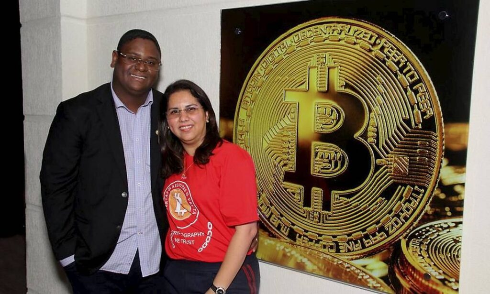
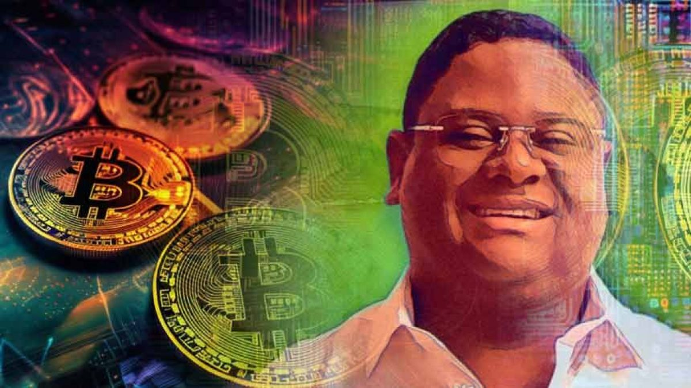

HISTÓRIA DE VIDA
Um ex-garçom de Cabo Frio desafia o sistema financeiro tradicional ao criar um império bilionário de criptomoedas. Entre fé, ganância e poder, ele se torna herói para uns e criminoso para outros. A série mergulha no choque entre periferia e elite financeira, expondo corrupção, desigualdade racial e os bastidores do mercado de criptos no Brasil.
CONCEITO
O negro de quebrou o sistema bancário!
Do anonimato às manchetes: a história de Glaidson Acácio dos Santos, um homem negro que desafiou todas as estruturas de poder do Brasil, conquistando ascensão, poder e protagonismo no universo financeiro nacional.
- Personagem central carismático e controverso com uma mistura de política, religião e crime organizado com grande potencial de internacionalização.

1ª Temporada
8 episódios (50-60 min).
Arco narrativo: Ascensão, auge e queda do “Faraó dos Bitcoins”.
Modelo: Estrutura de drama de 1h, sem pausas comerciais, com cliffhangers no final de cada episódio.
EPISÓDIOS
- 1. O Garçom Milionário
- 2. Oração e Investimentos
- 3. A Expansão Nacional
- 4. O Cerco da Polícia Federal
- 5. O Colapso
- 6. O Julgamento
- 7. Traições
- 8. O Legado do Faraó
PERSONAGENS

Glaidson (O Faraó)
Protagonista, complexo, entre fé e ambição.
Mirella
Esposa, parceira de negócios, símbolo de poder e lealdade.

Investidores Locais
Classe média e trabalhadores que o enxergam como salvador.

Polícia Federal e Ministérios Públicos
Antagonistas institucionais.
Pastores e Políticos
Personagens que ligam religião, poder e finanças.
PÚBLICO ALVO
Idade
Adultos de 18 a 45 anos
Interesses
Séries criminais, dramas sociais e thrillers financeiros
Perfil Global
Pessoas que acompanham histórias reais de golpes e fraudes milionárias (Narcos, Inventando Anna, Suits, O Lobo de Wall Street)
Mercado
Streaming em Alta
Netflix, HBO Max, Apple TV+, Globoplay e Prime Video buscam conteúdos locais com apelo internacional.
Temática Inédita
Poucas produções abordam criptomoedas e fraudes financeiras reais na América Latina.
Potencial de Múltiplas Temporadas
Exploração de personagens secundários e novos casos, ampliando o universo da série.
Orçamento
Investimento
US$ 3M – 5M (1ª temporada)
Modelo de Receita
Venda de direitos + distribuição internacional + produtos derivados (documentário, spin-offs, licenciamento)
Retorno Esperado
Alta audiência global em plataformas de streaming e valorização da propriedade intelectual (IP)
CONCLUSÃO
"O Faraó dos Bitcoins" não é apenas uma série sobre fraude, mas sobre poder, desigualdade e a luta de um homem negro contra o sistema financeiro tradicional. Uma narrativa brasileira com força global.